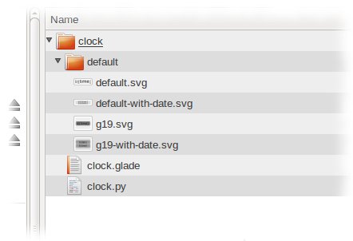
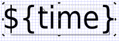
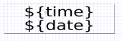
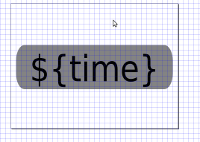
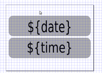

The intention is to make Gnome15 as easy to extend as possible. The API is in its infancy at the moment, but it is already rich enough to support many plugins for two quite different devices.
This page will walk you through the Clock example to give you a good idea of how all the pieces fit together.
You should have at least reasonable knowledge of Python to create the plugin. Skills in SVG/XML are a help although all screen designing may be done using Inkscape which is pretty easy to pick up the basics.
The full example source is provided here. You can extract the .glade used in this example for the preferences UI, but I would recommend you follow this tutorial in full for all the other files that must be created.
Most of Gnome15 is made up of Plugins. In general, a plugin will retrieve a piece of information from somewhere (such as CPU activity), and render it on to the LCD. The rendering is usually done using SVG Themes. Some plugins might not display anything until some event occurs, or they may be permanent.
Plugins are looked for in a two default locations. Firstly, in the current user's HOME directory, under .gnome15/plugins. Secondly, in a global location. To find out what directory global plugins are installed, you may run the following Python script :-
$ python Python 2.6.6 (r266:84292, Sep 15 2010, 16:22:56) [GCC 4.4.5] on linux2 Type "help", "copyright", "credits" or "license" for more information. >>> import gnome15.g15_globals as g >>> print g.plugin_dir /usr/share/gnome15/plugins >>>
Now you know the location of the global plugins, you should temporarily move the pre-installed clock plugin out of the way.
sudo mv /usr/share/gnome15/plugins/clock /usr/share/gnome15/old_clock_plugin
You can also specify a list of directories to search for plugins by setting the environment variable G15_PLUGINS before running the various tools. This is useful when working on the Gnome15 source.
G15_PLUGINS=$HOME/my_plugins g15-indicator
A plugin's files should be laid out in a particular way :-
First off, create a directory layout similar to that above. I would recommended leaving the 'default' theme folder for now, and start by writing the plugin implementation. I will also assume you are going to follow the tutortial exactly, to recreate the 'Clock' plugin.
Create a directory to use as a workspace. Give it a name equal to what you will be using for the plugin's Id. Then open up a text editor and create a file called clock.py
mkdir ~/Desktop/clock cd ~/Desktop/clock gedit clock.py
Now in your text editor, provide the python header line and the imports for the python classes we will be using :-
#!/usr/bin/env python import gnome15.g15_screen as g15screen import gnome15.g15_theme as g15theme import gnome15.g15_util as g15util import datetime import os import sys
All plugins must supply some basic variables. By convention, these should be placed near the top of the python file, just after any imports.
# Plugin information
id="clock"
name="Clock"
description="Just displays a simple clock. This is the plugin used in " \
+ " the tutorial at the Gnome15 site."
author="Joe B. <joe@localhost>"
copyright="Copyright (C)2010 Joe B."
site="http://localhost"
has_preferences=True
It is quite possible you want to expose some preferences in your plugin. In the Clock example you need two options, "Show Seconds" and "Show Date". You could create your preferences Window completely in Python using PyGTK, but it is recommended you design the window in Glade. Your Glade file should exist at the root of your plugin, by convention named the same as your plugin Id with a .glade suffix.
If the plugin you wish to write has no preferences, set has_preferences to False and you can skip to the Plugin Lifecycle section.
I will not describe how to create this Glade file. For the purposes of this example, you can either try your hand at Glade to produce a dialog that looks like the one in the image on the right, or you can extract clock.glade from the example source archive.
Once you have Glade file, the show_preferences module function must be added. Insert this just after the plugin information described above. You should also ensure has_preferences is set to True in the plugin information.
def show_preferences(parent, gconf_client, gconf_key):
widget_tree = gtk.Builder()
widget_tree.add_from_file(os.path.join(os.path.dirname(__file__), "clock.glade"))
dialog = widget_tree.get_object("ClockDialog")
dialog.set_transient_for(parent)
display_seconds = widget_tree.get_object("DisplaySecondsCheckbox")
display_seconds.set_active(gconf_client.get_bool(gconf_key + "/display_seconds"))
display_seconds.connect("toggled", changed, gconf_key + "/display_seconds", gconf_client)
display_date = widget_tree.get_object("DisplayDateCheckbox")
display_date.set_active(gconf_client.get_bool(gconf_key + "/display_date"))
display_date.connect("toggled", changed, gconf_key + "/display_date", gconf_client)
dialog.run()
dialog.hide()
def changed(widget, key, gconf_client):
gconf_client.set_bool(key, widget.get_active())
Gnome15 will call the show_preferences function when the user clicks on Preferences for this plugin in the configuration tool.
Note, the show_preferences function may be called either from the g15-applet process, or the separate g15-config command. For this reason, you have no access to the active instance of the plugin. During show_preferences, you should only ever write configuration. The plugin instance itself will have to monitor this configuration and react accordingly (more on this later).
You now need to provide a function that will create a plugin instance. This is called once when Gnome15 applet starts. Add the create module function :-
def create(gconf_key, gconf_client, screen):
return G15Clock(gconf_key, gconf_client, screen)
Now you start implementing the plugin class G15Clock. The activate and deactivate functions must be provided. These will be called either when Gnome15 starts and stops, or when the plugin is enabled or disabled by the user in the configuration tool.
class G15Clock():
'''
******************************************************************
* Lifecycle functions. You must provide activate and deactivate, *
* the constructor and destroy function are optional *
******************************************************************
'''
def __init__(self, gconf_key, gconf_client, screen):
self.screen = screen
self.hidden = False
self.gconf_client = gconf_client
self.gconf_key = gconf_key
'''
Most plugins will delegate their drawing to a 'Theme'. A theme usually consists of an SVG file, one
for each model that is supported, and optionally a fragement of Python for anything that can't
be done with the SVG
'''
self.reload_theme()
def activate(self):
self.timer = None
'''
The activate function is invoked when gnome15 starts up, or the plugin is re-enabled
after it has been disabled
'''
'''
Most plugins will usually want to draw on the screen. To do so, a 'page' is created. You also supply a callback here to
perform the painting. You can also supply 'on_shown' and 'on_hidden' callbacks here to be notified when your
page actually gets shown and hidden
'''
self.page = self.screen.new_page(self.paint, id="Clock")
'''
Once created, you should always ask for the screen to be drawn (even if another higher
priority screen is actually active. If the canvas is not displayed immediately,
the on_shown function will be invoked when it finally is.
'''
self.screen.redraw(self.page)
'''
Schedule another redraw if appropriate
'''
self.schedule_redraw()
'''
You want to be notified when the plugin configuration changed, so watch for gconf events
'''
self.notify_handle = self.gconf_client.notify_add(self.gconf_key, self.config_changed);
def deactivate(self):
'''
Stop being notified about configuration changes
'''
self.gconf_client.notify_remove(self.notify_handle);
'''
Stop updating
'''
if self.timer != None:
self.timer.cancel()
self.timer = None
'''
Deactivation occurs when either the plugin is disabled, or the applet is stopped
On deactivate, you must remove your canvas.
'''
self.screen.del_page(self.page)
def destroy(self):
'''
Invoked when the plugin is disabled or the applet is stopped
'''
pass
As mentioned earlier in Preferences description, your plugin should handle any appropriate configuration changes (if it has options), and react immediately if possible. You have already requested gconf notify us when changes occur, but you now need to add the callback function that handles this event :-
def config_changed(self, client, connection_id, entry, args):
'''
This is called when the gconf configuration changes. See add_notify and remove_notify in
the plugin's activate and deactive functions.
'''
'''
Reload the theme as the layout required may have changed (i.e. with the 'show date'
option has been change)
'''
self.reload_theme()
'''
In this case, you temporarily raise the priority of the page. This will force
the page to be painted (i.e. the paint function invoked). After the specified time,
the page will revert it's priority. Only one revert timer is active at any one time,
so it is safe to call this function in quick succession
'''
self.screen.set_priority(self.page, g15screen.PRI_HIGH, revert_after = 3.0)
An explanation of Pages is now required. To be able to draw on the LCD, the plugin must reserve a Page for itself. This is done through the screen object that has been passed to the plugin instance through the create module function. For screens that want to be permanently displayed, you would usually do this in the activate function (see above code).
Once you have the page object, you can use this to do things such as removing the page, changing it's priority, cycling to it etc.
Creation of a page also requires that you provide a callback function that will do the actual drawing of the plugin's screen. In this function, you can do one of two things :-
Now, add the the following code to the G15Clock class.
def reload_theme(self):
variant = None
if self.gconf_client.get_bool(self.gconf_key + "/display_date"):
variant = "with-date"
self.theme = g15theme.G15Theme(os.path.join(os.path.dirname(__file__), "default"), self.screen, variant)
def paint(self, canvas):
'''
Invoked when this plugins page is active and needs to be redrawn. You should NOT
call this function yourself, it is called automatically by the screen manager.
The function should draw everything as quickly as possible (i.e. not go off to
the internet to gather data or anything like that!)
'''
properties = { }
'''
Get the details to display and place them as properties which are passed to
the theme
'''
time_format = "%H:%M"
if self.gconf_client.get_bool(self.gconf_key + "/display_seconds"):
time_format = "%H:%M:%S"
properties["time"] = datetime.datetime.now().strftime(time_format)
if self.gconf_client.get_bool(self.gconf_key + "/display_date"):
properties["date"] = datetime.datetime.now().strftime("%d/%m/%Y")
'''
Now ask the theme to draw the screen
'''
self.theme.draw(canvas, properties)
This is the usual pattern for your theme enabled paint function. A dictionary object must be created and populated with the values that you wish to display on the screen in some fashion.
In this case, you create two properties. time contains the current time, and date contains the current date.
The final thing your paint function should do is call the draw function of the theme object, passing it the properties you have built up.
The final task in the Python file is write the code to redraw the screen at a fixed interval. As you are writing a clock, this redraw might need to happen once every second (if your 'Show Seconds' option is on), or you may only need to redraw every minute.
A plugin should make best efforts to only redraw when it needs to, particulary if the theme is complex.
def redraw(self):
'''
Invoked by the timer once a second to redraw the screen. If your page is currently activem
then the paint() functions will now get called. When done, you want to schedule the next
redraw
'''
self.screen.redraw(self.page)
self.schedule_redraw()
def schedule_redraw(self):
'''
Determine when to schedule the next redraw for.
'''
now = datetime.datetime.now()
display_seconds = self.gconf_client.get_bool(self.gconf_key + "/display_seconds")
if display_seconds:
next_tick = now + datetime.timedelta(0, 1.0)
next_tick = datetime.datetime(next_tick.year,next_tick.month,
next_tick.day,next_tick.hour, next_tick.minute, int(next_tick.second))
else:
next_tick = now + datetime.timedelta(0, 60.0)
next_tick = datetime.datetime(next_tick.year,next_tick.month,
next_tick.day,next_tick.hour, next_tick.minute, 0)
delay = g15util.total_seconds( next_tick - now )
'''
Try not to create threads or timers if possible. Use g15util.schedule() instead
'''
self.timer = g15util.schedule("ClockRedraw", delay, self.redraw)
Notice the comment about threads and timers. Using g15util.schedule means all redrawing across all plugins happen on a single thread, so unless your redraw is going to take a long time, you should avoid creating your own thread.
Now you are ready to create the SVG file for the theme. While you can of course create this by hand, it is recommended you use an SVG editor such as Inkscape to do this.
First, create the default theme directory in the plugin workspace, cd into it and start Inkscape :-
cd ~/Desktop/clock mkdir default cd default inkscape
You will be creating a total of 4 SVG files, two for the G15 (and other monochrome models when supported), and two for the G19. Each model has two SVG files because there are two Variants (one for when displaying the date, and one for when just the time is displayed). Most plugins do not actually have variants, and the Clock example could in fact be implemented without them, but they are included to demonstrate the feature.
We will start with the default.svg file used for the G15.Open up the Document Properties dialog (Shift+Ctrl+D) and set a Custom Size of 160px by 43px. These are the exact dimensions of the LCD for the keyboard model.
When drawing shaps and text, you should also try to only use integer numbers for locations and sizes where possible. For example, drawing a box at x=54.2343323, y=12.1213 is NOT recommended. Instead, you should use x=54, y=12. This is not so important for G19 theme files, but failing to observe this in the default themes could mean you get "rough" edges on the G15.
The most used feature of themes is Property Replacement. Gnome15 will replace any occurences of the variable names it finds in the SVG with the value stored in the Properties dictionary created in paint function of the plugin class.
In Inkscape, simply select the Text tool, click where you want to place the text and type the variable name pattern in the format ${NAME}. At this point, you should also set the font size and justification.
For the clock example, you should add a new text field that has a value of ${time} as per the image to the left.
A note about Fonts. While for the G19 you can use any font family, size or style, for the G15 you MUST use fixed size bitmap fonts (the default family is 'Fixed'). The problem is, Inkscape doesn't seem to handle these very well, so you may set the font family to Sans, and Gnome15 will automatically replace the font name when it loads a theme file for the G15..In order to allow the Background Colour and Foreground Colour controls to work, a theme file should try to avoid using specific colours for the Fill colour. Instead, the element should be set to Inherit.
Once you have done this, save the SVG file with a name of default.svg.
You now need to repeat the above steps for each of the variants and models. When complete you will have 4 files :-
The SVG files for the G19 must have a different document size, this time 320x240
|  |  |  |  |
| default.svg | default-with-date.svg | g19.svg | g19-with-date.svg |
You are now ready to install the plugin and try it out! If you haven't already, move the pre-installed Clock plugin out of the way (see the instructions in the How Gnome15 Locates Plugins section).
For now, install the plugin into the user specific plugins directory. This will be $HOME/.gnome15/plugins. You may have to create this directory.
mkdir -p $HOME/.gnome15/plugins mv ~/Desktop/clock $HOME/.gnome15/plugins
Now remove the applet from your panel, wait a few seconds for it to completely shutdown, then add it back again. You should now be able to go into Preferences -> Plugins and enabled your new plugin.
Here is a quick run-down of other theme features that are not used by the Clock example.
Due to the nature of the G15's LCD display, if your text overlaps another element, such as an image or other text, the two elements will merge together and become unreadable. To avoid this you can mark text with the shadow style.
Internally, when Gnome15 loads the theme, it will make 8 copies of the element, colour them the same colour as the background, and place them underneath the original element at offsets x-1/y-1, x/y-1, x+1/y-1, x-1/y, x+1/y, x-1/y+1, x/y+1 and x+1/y+1. The end effect is you end up with a 1 pixel white border around all of the text.
Unfortunately, rsvg, which is used to render the SVG, does not support the <flowRoot> tag. This tag is used when you want text to wrap within a defined shape. Within the context of Gnome15, this would be particularly useful for when the size of any replaced text varies wildly (such as Notification messages). However, rsvg just renderes them as big black boxes!
To work around this, the concept of Text Boxes has been introduced. The clock example does not use these, but I will describe them here now.
Basically, you draw two objects in Inkscape. The first being a rectangle that defines the area you want the text to occupy (and give it a class attribute of textbox), the second being the text itself. You then link them together using their Id. The rectangle object should be given an Id equal to the property name of the text it will contain, and the text object should have the same Id, but suffixed with _text.
Look at the source for the Notify SVG files for an example.
Another frequently used feature is hiding objects depending on whether a property is set. For example, the Media Player plugin displays a Paused image when the media player is in that state.
The final special theme feature provided is handling of progress bar. Such objects will have their width attribute altered based on the percentage value provided by a property.
If you want to manipulate the theme in a way that is not possible using just standard SVG and the features above, you may provide a python class along with any SVG file. This can contain functions that manipulate the SVG document, or paint directly using Cairo. This feature is currently used by the Calendar plugin and the RSS plugin, so look at the source for those for examples for now.